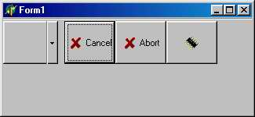

TToolBar и ToolButton - инструментальная панель и кнопки для нее
Компонент TToolBar представляет собой специальный контейнер для создания инструментальных панелей. Главная отличительная черта TToolBar - его способность гибкого управления дочерними элементами, которые он может группировать, выравнивать по размерам, располагать в несколько рядов. Компонент может манипулировать любыми вставленными в него дочерними элементами, но все его возможности в полной мере проявляются только со специально для него разработанным компонентом TToolButton (инструментальная кнопка). Этот компонент похож на кнопку TSpeedButton, но не ищите его в палитре компонентов - его там нет. Поскольку он разработан специально для TToolBar, вставить его в инструментальную панель можно только после щелчка правой кнопкой на компоненте TToolBar и выборе NewButton или NewSeparator (сепараторы предназначены для функционального выделения на инструментальной панели групп элементов и представляют собой разновидности кнопок TTooiButton). Компонент TTooiButton не имеет свойства, предназначенного для хранения картинки, однако TToolBar умеет использовать контейнер TimageList, чтобы извлечь из него нужную картинку и поместить ее на инструментальную кнопку.
Методику использования TToolBar совместно с TToolButton рассмотрим на примере программы, окно которой показано на рис. 18.32.

Рис. 18.32. Пример TToolBar с кнопками TTooiButton
- Поместите на пустую форму компонент TimageList, щелкните по нему правой кнопкой мыши и выберите продолжение ImageList Editor.
- Для заполнения контейнера ImageList1 подойдут любые небольшие по размеру изображения. К сожалению, растры из каталога images | BUTTONS[ См. замечание в начале главы.] рассчитаны на использование в кнопках TSpeedButton и содержат по два изображения каждый -обычное и для запрещенной кнопки. Кнопки TToolButton также могут иметь два или три изображения, но эти изображения необходимо размещать в разных контейнерах rimageList, поэтому использование заготовок из каталога images | buttons в кнопках TToolButton приведет к появлению на них по два изображения одновременно[ Точнее, при вставке двойной картинки редактор компонента спросит у вас, надо ли ее разделять на две отдельные картинки. ]. Чтобы этого не произошло, загрузите пиктограммы из каталога images | icons: щелкните по кнопке Add окна редактора и выберите в этом каталоге файл chemical.
- Повторите П. 2 для фацлов Chip, Construe, Earth, Finance, Handchek, Shipping, Skyline И Technlgy, после чего закройте редактор ImageList.
- Поместите на форму компонент TToolBar, в окне Инспектора объектов разыщите свойство images, раскройте список в правой колонке строки images и выберите imageListi. Мы указали компоненту на источник изображений и можем теперь вставлять в него кнопки.
- Щелкните по ToolBar1 правой кнопкой мыши и выберите New Button.
- Вставьте еще две кнопки, после чего вставьте разделитель NewSeparator.
- Разместите на TooiBarl остальные кнопки и сепараторы (см. рис. 18.33).
- Если вы захотите, чтобы кнопки имели модный “плоский” вид, установите в свойство Flat компонента ToolBarl значение True.
Свойство Buttons компонента TToolBar позволяет обратиться к каждому дочернему компоненту как к объекту класса TToolButton, имеющему такие свойства:
|
property AllowAlIUp: Boolean;. |
Если содержит True, синхронизирует свое состояние с состоянием других кнопок в той же группе: в любой момент может быть нажата только одна кнопка группы. Игнорируется, если Grouped=False |
|
property Caption: String; |
Содержит связанный с кнопкой текст, который будет показан, если свойство ShowCaptions компонента TTooiBar имеет значение True |
|
property Down: Boolean; |
Определяет состояние кнопки: если содержит True, кнопка утоплена |
|
property DropdownMenu: TPopupMenu; |
Связывает вспомогательное меню с нажатой кнопкой |
|
property Grouped: Boolean; |
Разрешает/запрещает учитывать свойство ailOwAlIUp |
|
property Imagelndex: Integer; |
Определяет индекс связанного с кнопкой изображения |
|
property Indeterminate: Boolean; |
Запрещает/разрешает выбор кнопки. |
|
TToolButtonStyle = (tbsButton, tbsCheck, tbsDropDown, tbsSeparator, tbsDivider) ; property Style: TToolButton Style; |
Определяет стиль кнопки: tbsButton - обычная кнопка; tbsCheck - западающая кнопка (остается в нажатом положении; для ее освобождения нужно щелкнуть по ней еще раз); tbsDropDown - кнопка с символом раскрывающегося списка; tbsSeparator - разделитель (на месте этой кнопки будет пустое место); tbsDivider - разделитель (в работающей программе на местеэтой кнопки будет вертикальная черта) |
|
property Wrap: Boolean; |
Если имеет значение True, кнопка завершает текущий ряд кнопок. Игнорируется, если свойство wrapable компонента TToolBar имеет значение True |
Свойства компонента TToolBar:
|
property AutoSize: Boolean; |
Если содержит True, высота компонента будет автоматически согласовываться с высотой кнопок |
|
property ButtonCount: Integer; |
Содержит количество вставленных в инструментальную панель дочерних компонентов (не только кнопок TToolButton) |
|
property ButtonHeight: Integer; |
Определяет высоту кнопок TtoolButton |
|
property Disabledlmages: TImageList; |
Определяет контейнер для изображений запрещенных кнопок |
|
property Flat: Boolean; |
Если содержит True, панель и кнопки на ней прозрачны для фона и вокруг кнопки появляется граница, только когда над ней располагается указатель мыши |
|
property Hotlmages: TImageList; |
Определяет контейнер изображений для кнопок в момент, когда над кнопкой располагается указатель мыши |
|
property Images: TImageList; |
Определяет контейнер для изображений кнопок в обычном состоянии |
|
property Indent: Integer; |
Определяет отступ в пикселях от левого края компонента для первого дочернего элемента |
|
property List: Boolean; |
Если имеет значение True, изображение прижимается к левой границе кнопки, а текст - к правой, в противном случае текст выводится под изображением. Игнорируется, если showCaptions = False |
|
property RowCount: Integer; |
Содержит количество рядов кнопок |
|
property ShowCaptions: Boolean; |
Разрешает/запрещает показ на кнопках текста |
|
property Wrapable: Boolean; |
Запрещает/разрешает располагать кнопки в нескольких рядах |
Для компонента определено событие OnResize, возникающее при изменении размеров компонента.
TCoolBar и TCoolBand - инструментальная панель и полосы для нее
Компонент TCoolBar предназначен для создания настраиваемых инструментальных панелей. Для каждого размещаемого на нем элемента TCoolBar создает объект класса TCoolBand (полоса), который может изменять свои размеры и положение в пределах границ компонента.
Следует сразу же заметить, что в отличие от TcontrolBar (страница Additional палитры компонентов) компонент TCoolBar предназначен для примерно таких же задач, но и в версии 2, где он появился впервые, и в версии б он все еще кажется “сырым”, плохо отлаженным.
Центральным свойством компонента является Bands - массив созданных в компоненте полос TCoolBand. Каждая полоса может иметь текст, пиктограмму и произвольный управляющий элемент. В отличие от ттоо1ваг или TControiBar полоса в TCoolBar всегда содержит только один интерфейсный элемент, но ничто не мешает этому элементу быть элементом-контейнером для размещения нескольких компонентов. Размещенный на полосе компонент окружен специальным окном TCoolBar и всегда стремится занять левый верхний угол полосы, при этом остальные размеры полосы изменяются так, чтобы полностью охватить элемент.
Поясним сказанное несложным примером.
- Поместите на пустую форму компонент TCoolBar - он тотчас же займет верхнюю часть формы, так как по умолчанию его свойства Alignment содержит alTop.
- Щелкните по компоненту левой кнопкой и выберите Bands Editor (редактор полос).
- Окно редактора похоже на многие другие используемые в Delphi окна-редакторы: щелкните по кнопке, чтобы вставить в компонент новую полосу.
- В окне Инспектора объектов можете задать текст для полосы и связанную с ней пиктограмму свойствами соответственно Text и imageindex (предварительно компонент в свойстве images должен уже содержать ссылку на связанный с ним контейнер TimageList). Свойство BitMap используется для заполнения полосы чередующимся узором. Для простоты ограничьтесь указанием текста полоса i и закройте редактор полос.
- Поместите ниже полосы, но в тот же контейнер CoollBar1 любой управляющий элемент, например, редактор TEdit. Подобно полосе он растянется вдоль верхнего края и будет окружен специальным окном с полосой-кнопкой для реализации механизма Drag&Dock.
- Вновь раскройте редактор полос, щелкните по ранее установленной полосе и в Инспекторе объектов раскройте список в свойстве Control - в нем окажется только что вставленный в форму компонент TEdit. Щелкните по нему - и он “перепрыгнет” на первую полосу, оставив ранее занимавшую им полосу TCoolBar пустой. Таким способом происходит связывание полосы TCooiBar с компонентом.
- Освободившуюся полосу можно связать с новым управляющим элементом (например, ComboBox) и т. д.
- Вид работающей программы показан на рис. 18.33.
Рис. 18.33. Вид окна CollBar при рачых тчтпччких пользователя
Свойства TCoolBand:
|
property Bitmap: TBitmap; |
Определяет изображение, которое будет циклически повторяться по всему пространству полосы |
|
property BorderStyle: TBorder-Style; |
Определяет наличие рамки у полосы: bsNone - нет рамки; bssingle - рамка толщиной в 1 пиксель |
|
property Break: Boolean; |
Если содержит True, полоса располагается в новой строке, в противном случае - в той же строке, что и предыдущая полоса |
|
property Control: TWinControl; |
Указывает элемент, который содержит полоса |
|
property FixedBackground: Boolean; |
Запрещает/разрешает периодическое повто рение изображения Bitmap по всей поверхности полосы |
|
property FixedSize: Boolean; |
Запрещает/разрешает изменение размеров полосы |
|
property HorizontalOnly: Boolean; |
Предписывает показывать полосу только для значения False свойства Vertical компонента-владельца TCoolBar |
|
property Imagelndex: Integers; |
Содержит индекс связанного с полосой изображения |
|
property MinHeight: Integers; |
Определяет минимальное значение высоты полосы при изменении ее размеров |
|
property MinWidth: Integers; |
Определяет минимальное значение ширины полосы при изменении ее размеров |
|
property ParentBitmap: Boolean; |
Разрешает/запрещает использовать значение свойства Bitmap компонента-владельца TCoolBar вместо собственного свойства Bitmap |
|
property Text: String; |
Содержит текст полосы |
|
property Visible: Boolean; |
Если содержит False, полоса не видна на этапе прогона программы |
|
property Width: Boolean; |
Определяет ширину полосы в пикселях |
Свойства компонента TCoolBar:
|
property AutoSize: Boolean; |
Если содержит True, высота компонента будет автоматически согласовываться с высотой полос |
|
property BandBorderStyle: TBorderStyle; |
Определяет наличие рамок: bsNone - нет рамок; bssingle - каждая полоса имеет рамку толщиной в 1 пиксель |
|
property Bands: TCoolBands; |
Содержит список всех полос. Свойство items этого объекта открывает доступ к полосе по ее индексу |
|
property Bitmap: TBitmap; |
Определяет изображение, которое будут использовать все полосы |
|
property FixedOrder: Boolean; |
Запрещает/разрешает перемещение полос |
|
property FixedHeight: Boolean; |
Запрещает/разрешает изменение размера полос |
|
property Images; TImageList; |
Указывает контейнер для изображений, связанных с каждой полосой |
|
property ShowText: Boolean; |
Если содержит True, на полосе показывается связанный с ней текст |
|
property Vertical: Boolean; |
Если содержит True, полосы располагаются по вертикали компонента |
|
Для компонента определены такие события: |
|
|
property OnChange: TNotifyEvent; |
Возникает при изменении свойств Break, Index или Width у любой полосы |
|
property OnResize: TNotifyEvent; |
Возникает при изменении размеров компонента |
TPageScroller - панель с прокруткой
Компонент служит контейнером для размещения длинных узких компонентов наподобие TToolBar. Его отличительная черта - наличие небольших стрелок прокрутки по сторонам контейнера в случае, если ширина (высота) дочернего окна превышает соответствующий размер компонента. Чтобы увидеть компонент в действии, щелкните по странице Win32 галереи компонентов Delphi (сам компонент TPageScroller на этой странице обычно не виден[ Для разрешения экрана 800х600.]), и, чтобы получить к нему доступ, следует щелкнуть по кнопке с небольшой стрелкой в правой части страницы.
По назначению компонент весьма напоминает уже рассмотренный в п. 18.2.9 компонент TScrollBox и отличается от него двумя обстоятельствами: компонент не содержит полос прокрутки, а прокрутка осуществляется так, чтобы полностью показать ранее невидимый дочерний компонент.
Свойства компонента:
|
property AutoScroll: Boolean; |
Разрешает/запрещает автоматическую прокрутку при перемещении указателя мыши над кнопкой прокрутки |
|
property ButtonSize: Integer; |
Определяет размер в пикселях кнопок про крутки: для горизонтальной ориентации - ширину, для вертикальной - высоту |
|
property Control: TWinControl; |
Содержит ссылку на прокручиваемое окно |
|
property DragScroll: Boolean; |
Указывает, будет ли компонент приемни ком в операциях Drag&Drop. Если содержит True, компонент будет прокручивать дочернее окно при перемещении над ним указателя мыши с “грузом” |
|
property Margin: Integer; |
Указывает расстояние в пикселях от границы компонента до соответствующей стороны дочернего окна |
|
type TPageScrollerOs-xentation = (soHorizontal, soVertical) ; property Orientation: TPageS crollerOrientation; |
Определяет ориентацию компонента: soHorizontal -по горизонтали; soVertical -по вертикали |
|
property Position: Integer; |
Определяет текущее положение прокручиваемого окна относительно границ компонента |